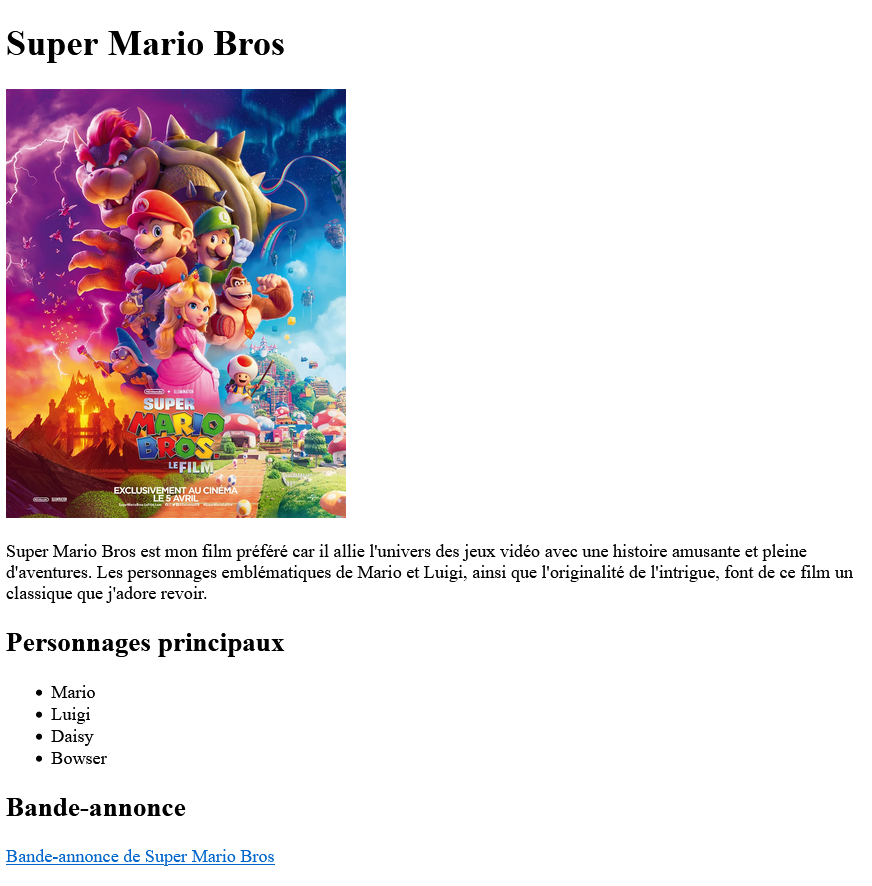
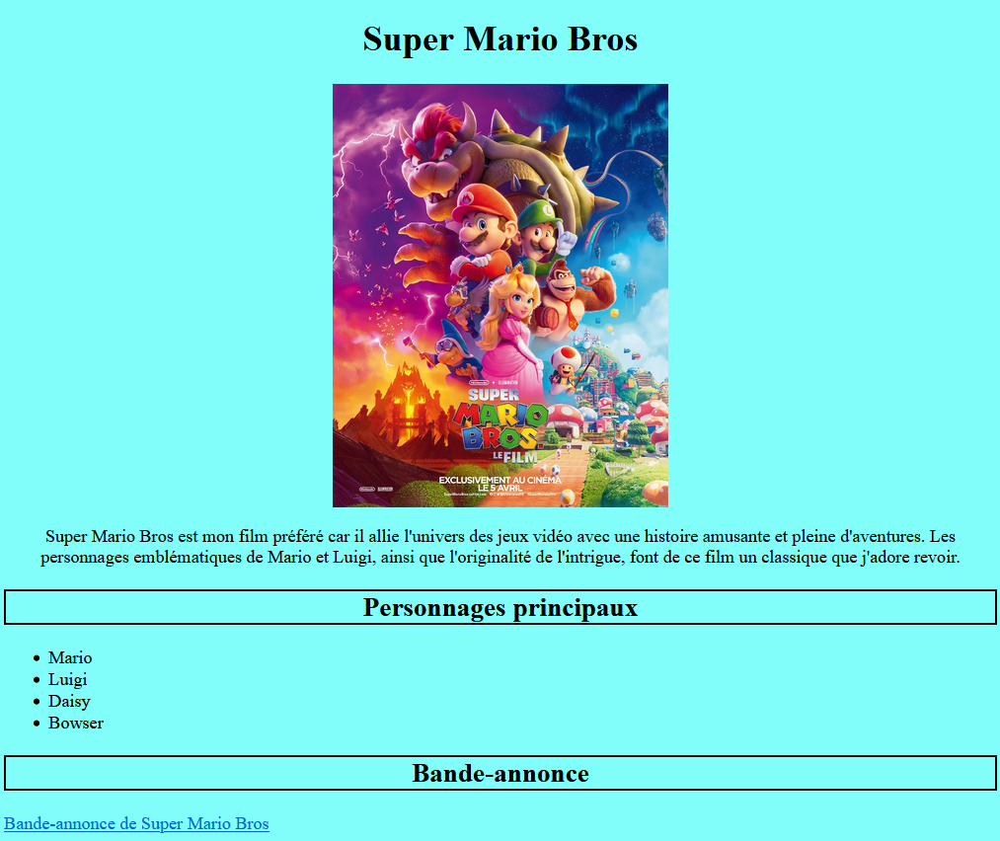

Créer une page web qui présente votre film préféré en suivant les étapes ci-dessous. Vous utiliserez du HTML pour structurer la page (étape 1) et du CSS pour la styliser (étape 2).
Prérequis :
Il y a un bonus pour ceux qui finissent le TP plus tôt. Les élèves n'ayant pas réussi à atteindre ce bonus pourront le faire pour la séance prochaine s'ils le souhaitent, ce bonus n'est pas obligatoire.
Ouvrez le dossier TP_SNT sur Visual Studio Code. À l'intérieur de ce dossier, se trouve le fichier mon_film_prefere.html. Ce fichier sera la page que nous allons construire. Nous allons seulement remplir la balise <body> sans toucher aux autres parties du document.
Pour voir votre page web, ouvrez mon_film_prefere.html dans un navigateur : pour ouvrir la page, faites un clic droit sur le fichier et cliquez sur Open, ou allez dans vos documents, accédez au dossier TP_SNT et double-cliquez sur mon_film_prefere.html. Au début, elle sera blanche, c'est normal car nous n'avons pas encore commencé à créer notre page.
📌NB : après chaque étape, pensez à actualiser la page pour voir les modifications apportées.
Page à avoir à la fin de l'étape 1 :
🔍 Suivez les étapes suivantes pour créer votre page web :
Utilisez la balise <h1> pour le titre. Exemple : <h1>Nom de votre film</h1>.
Utilisez la balise <img src="URL_de_l_image" alt="description"> pour ajouter une image.
Aussi, pensez à telecharger une image et à la placer dans un dossier afin de pouvoir y accéder via son url.
Utilisez la balise <p> pour votre texte. Exemple : <p>C'est mon film préféré parce que...</p>.
Utilisez la balise <ul> et <li> pour créer une liste. Exemple : <ul><li>Personnage 1</li></ul>.
Utilisez la balise <a href="URL_de_la_bande_annonce"> pour créer le lien. Exemple : <a href="https://www.youtube.com/watch..">Voir la bande-annonce</a>.
<ul> et <ol> ? Donnez un exemple d'affichage pour chacune.
Un lien vers la feuille de style a déjà été ajouté dans la section <head> de votre fichier HTML :
<link rel="stylesheet" href="/style/style.css">
📌Cet ajout est indispensable pour que le style soit bien affecté à la page. Il n'est donc pas nécessaire de le rajouter à nouveau.
Cependant, le fichier style.css (situé dans le dossier style) est vide, à vous de le compléter avec les styles suivants pour rendre la page plus esthétique. 🎨
Page à avoir à la fin de l'étape 2 :
🔍 Suivez les étapes suivantes pour créer votre style CSS :
Retournez dans votre fichier html, ajoutez un tableau pour afficher les détails du film avec
Rappel :
Qui affichera :
| Titre | Super Mario Bros |
|---|---|
| Date de sortie | 5 avril 2023 |
| Réalisateur | Aaron Horvath, Michael Jelenic |
| Durée du film | 1h32 |
| Genre | Animation, Aventure, Comédie |
table {
width: 80%;
margin: 20px auto;
border-collapse: collapse;
}
th, td {
border: 1px solid #333;
padding: 10px;
text-align: left;
}
th {
background-color: #f2f2f2;
}